| ・Double Jump |
| 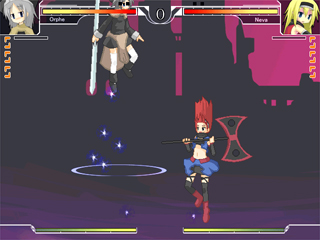 |
| Ấn phím Kĩ thuật nhảy 2 bước khi ở trên sàn đấu. Nếu bạn nhảy qua đầu đối phương, cơ thể bạn sẽ tự xoay đầu khi chạm đất. Chú ý bạn chỉ có thể nhảy 1 lần nữa khi ở trên không. |
| ・Cơ chế điều khiển cơ bản |
| ・Bài quyền Wonderful |
| 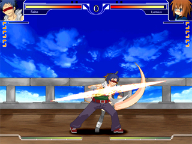 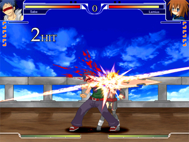 |
| Một loại cơ chế điều khiển cho phép nhân vật của bạn nối tiếp đòn đánh đầu bằng một đòn đánh khác, tạo ra một chuỗi liên hoàn chưởng. Nó thường được ví như là 1 sự kết hợp các nút bấm lần lượt với nhau Cách sử dụng cơ bản thường là P→K→S→HS→Kĩ Năng , tuy nhiên cũng có một số trường hợp ngoại lệ tuỳ vào nhân vật, vì vậy hãy kiểm tra cẩn thận. Đây là một điều quan trọng khi bạn là người mới chơi, vì vậy hãy bắt đầu luyện tập với cái này ngay từ bây giờ. |
| ・Double Jump |
| 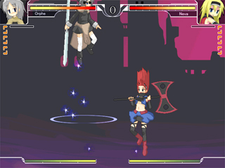 |
| Ấn phím Kĩ thuật nhảy 2 bước khi ở trên sàn đấu. Nếu bạn nhảy qua đầu đối phương, cơ thể bạn sẽ tự xoay đầu khi chạm đất. Chú ý bạn chỉ có thể nhảy 1 lần nữa khi ở trên không. |
| ・Dash / Air Dash | |
| 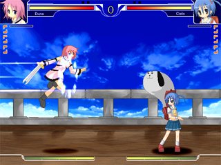 | |
| Ấn Phi thân và di chuyển ở tốc độ cao. Nếu bạn sử dụng Air Dash ( Lướt trên không ) qua đầu đối phương, bạn có thể quay đầu khi ở trên không. Bạn chỉ có thể xài một lần khi ở trên không so với mặt đất。 Hiệu quả và tốc độ của kĩ năng này tuỳ thuộc vàp nhân vật, và có 2 kiểu Dash: Chạy và Nhảy cóc. |
|
| Chạy： Nhân vật sẽ tiếp tục chạy miễn là bạn giữ phím tiến lên trong khi chạy. Khi bạn nhả phím tiến, nhân vật sẽ dừng lại. |
 |
| Nhảy cóc： Nhảy tới trong 1 khoảng cách ngắn và thấp。 Không thể dừng lập tức khi nhảy, nhưng có thể bẫy đối phương và áp sát nhanh hơn so với chạy. |
 |
| ・Backdash / Backward Air Dash |
| 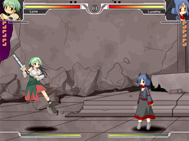 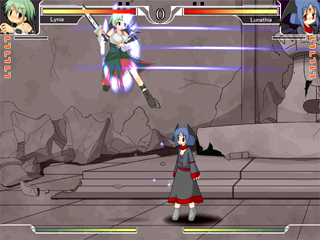 |
| Ấn Nhảy lùi về sau và giữ khoảng cách với đối phương. Khi sử dụng ở dưới đất hay trên không, sẽ vô hình trong 1 khoảnh khắc, nắm giữ một vai trò quan trọng phòng thủ, ví dụ như tránh xa đòn tấn công của đối phương hoặc chống lại kĩ năng Không Kích của đối phương. Kĩ năng Backward Air Dash có thể dùng đê quay đầu nếu trước đó nhân vật nhảy qua đầu đối phương. Khi ở trên không, bạn chỉ có thể sử dụng Backdash một lần. |
| ・High Jump / Super Jump |
| 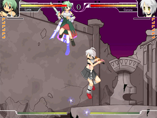 |
| Ấn Nhảy cao và xa hơn bình thường so với kĩ năng nhảy thông thường. Còn có thể sử dụng để khắc phục việc nhảy thấp hơn bình thường đối với nhân vật có cân nặng lớn. Lưu ý rằng, nhảy 2 bước không thể sử dụng với kĩ năng này Chú ý là khi ấn |
| ・Jump Cancel |
 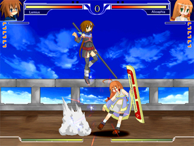 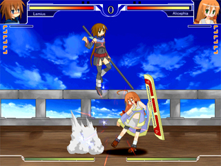 |
| (Sau khi đánh trúng đối phương ) Ấn phím Một số đòn đánh cơ bản có thể dừng lại và được thay thế bởi chuyển động nhảy lên. Có rất nhiều mục đích sử dụng cho nó, bao gồm việc nối tiếp đòn tấn công hoặc chuyển sang combo trên không. Còn có cả kĩ năng tương tự như vậy thậm chí cả ở trên không. Đỡ trên không là bất khả thi khi sử dụng kĩ năng này. |
| ・Air Recovery / Ukemi |
  |
| （Khi bị hất lên không trung) Ấn bất kì phím mũi tên nào Phục hồi trở lại trạng thái ban đầu ở trên không và phòng thủ. Hướng rơi xuống tuỳ thuộc vào phím Mũi tên mà bạn đã bấm. Phím Phím Nếu bạn không cẩn thận mà lạm dụng nó, bạn sẽ nhận lấy sát thương khá lớn, vì vậy hay suý nghĩ kĩ trước khi sử dụng. |
| ・Counter Hit |
 |
| Nếu bạn ra đòn tấn công mà bị đối phương đánh trúng trước, trạng thái Counter Hit sẽ xảy ra, lượng sát thương dính phải sẽ tăng lên 120%. Thời gian choáng sẽ lâu hơn, một số chiêu không thể đánh tiếp lại có thể sử dụng thành combo được. |
| ・Off The Ground |
| 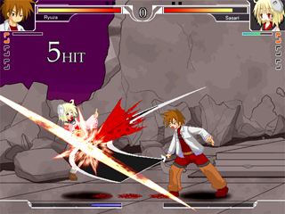 |
| Tấn công lên đối phương đã bất tỉnh. Lượng sát thương gây ra chỉ có 30% , và thanh Counter của đối phương sẽ tăng nhiều hơn, nhưng có thể sử dụng để tăng thanh Kĩ năng của bạn hoặc muốn đánh mất mấu một ít. Khi bị đánh trong khi bất tỉnh, combo cực kì ngắn và đối phương ko bị hất lên cao. |
| ・Trạng thái DANGER |
 |
| Khi HP của bạn chỉ còn 5%, thanh Sức Sống sẽ nhấp nháy và dòng chữ DANGER sẽ hiện ra. Ở trạng thái này, toàn bộ đòn tấn công của đối phương ko gây sát thương khi bạn đỡ đòn. Vào tình hướng này, đừng bỏ cuộc và tìm cơ hội phản công. |
| ・Just Break |
| 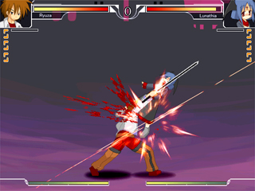 |
Một đòn tấn công dùng để hất đối phương lên không trung. Phần thân trên hoàn toàn vô hình khi sử dụng, và bạn có thể sử dụng để khắc chế đối phương ra đòn trên không. Về cơ bản, chỉ khi đánh trúng bạn mới có thể chuyển sang kĩ năng khác. |
| ・Throw / Air Throw |
| 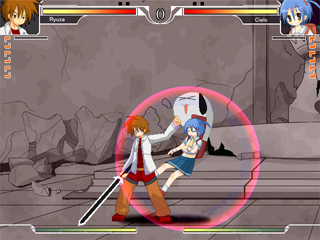 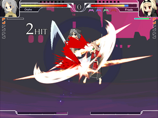 |
| (Sau khi áp sát đối phương) Đây là 1 kĩ năng mà đối phương không thể đỡ khi sử dụng. Không thể kích hoạt kĩ năng này khi đối phương đang trong trạng thái đỡ đòn hay dính đòn. Về cơ bản, đây là một trong nhiều cách đốn ngã đối phương. Kĩ năng này gây ra một lượng sát thương không nhỏ, thậm chí có thể tiếp tục tấn công đối phương sau khi sử dụng. |
| ・Throw Break |
| 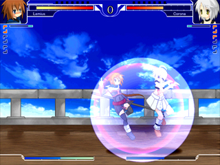 |
| (Sử dụng trong khoảnh khắc bị đối phương sử dụng Throw) Vô hiệu hoá đòn Throw của đối phương và nhảy lùi về vị trí ban đầu. Nếu kích hoạt thành công, thanh Counter sẽ tăng lên 1 thanh. Không thể sử dụng ở trên không, hay ở trạng thái Counter Hit, hoặc vào lúc vòng sáng màu đỏ xuất hiện. |
| ・Original Ability |
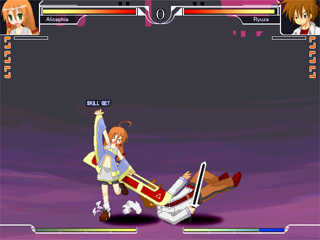  |
| Trong Wonderful World, mỗi nhân vật đều có một năng lực ưu việt và có thể hành động dựa theo năng lực đó, với tên gọi chung là "Original Ability" Có rất nhiều loại Original Ability, có loại được kích hoạt tự động, có loại chỉ được kích hoạt dưới điều kiện đặc biệt, có loại lại được kích hoạt sau khi ra một đòn đánh cụ thể. Nó là một yêu tố quan trọng cho nhân vật đang chơi, và khi đã thành thạo bạn có thể biến nó thành ưu điểm của mình trong trận chiến. Ngoài ra, một số nhân vật lại có nhược điểm khi sử dụng Original Ability. Bạn sẽ có nhiều lựa chọn cho chiến thuật của mình hơn nếu biết rõ Original Ability của đối phương, Vì vậy hãy kiểm tra tất cả các loại Original Ability. |